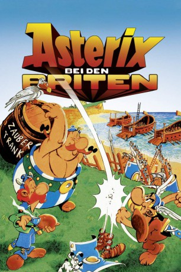

#1817 Asterix bei den Briten
 
 IMDB-Wertung: 7.1 / 10
IMDB-Wertung: 7.1 / 10  Metascore: 0
Metascore: 0 
Nach erfolgreichen Eroberungen sieht Cäsar in Britannien sein nächstes Ziel und beginnt dort mit seinen Truppen einen Feldzug. Die Briten leisten erbittert Widerstand, beenden den Kampf jedoch nachmittags um fünf für eine Teepause (eigentlich trinken sie nur warmes Wasser mit Milch) und kämpfen am Wochenende grundsätzlich nicht. Erst als sich die Römer darüber hinweg setzen, gelingt es ihnen, die Briten zu unterwerfen. Nur noch ein kleines Dorf leistet Widerstand, ist jedoch in arger Bedrängnis. Einer dieser Dorfbewohner, Teefax, erinnert sich an seine gallischen Vettern und dass diese eine Wunderwaffe, den Zaubertrank, besitzen.Er beschließt, nach Gallien zu reisen, um die Gallier zu überreden, mit in seine Heimat zu kommen, um dort mit Hilfe des Zaubertrankes die Römer zurück zu schlagen.
Jahr: 1986
Dauer: 79 Minuten
FSK: 0
Land: Frankreich Studio: Jugendfilm-VerleihTonspuren:
Untertitel: Deutsch,
Auflösung: 1080p (1808x1080) Größe: 5601 MB
Genre: Animation/Trick, Abenteuer, Komödie, Familie
Regisseur: Pino Van Lamsweerde
Drehbuch: René Goscinny, Albert Uderzo, Pierre Tchernia
Soundtrack: Vladimir Cosma
Darsteller:
- Pierre Mondy als Cetinlapsus
- Peter Hudson als
 Roger Carel als Astérix
Roger Carel als Astérix- Pierre Tornade als Obélix
- Graham Bushnell als Jolitorax
- Maurice Risch als Châteaupétrus
- Roger Lumont als Stratocumulus
- Nicolas Silberg als Motus
- Albert Augier als Le marchand phénicien
- Paul Bisciglia als
- Bertie Cortez als
- Gérard Croce als
- Alain Doutey als
- Michel Elias als
- Michel Gatineau als Cétautomatix / le chef des pirates
- Henri Labussière als Panoramix
- Ian Marshall als
- Judy Martinez als
- Edward Marcus als
- Martine Messager als
- Pierre Mirat als Le vendeur de cervoise
- Joseph Nyavri als
- Henri Poirier als Abraracourcix
- Lawrence Riesner als
- Serge Sauvion als César
- Christopher Wells als
- Herbert Baskind als Totalapsus
- Jack Beaber als Asterix
- Patrick Floersheim als
- Steve Gadler als
- Gordon Heath als Caesar
- Billy Kearns als Obelix
- Mike Marshall als
- Sean O'Neil als General Motus
- Jimmy Shuman als Chateaupetrus
- Ken Starcevic als
Datei: X:\Kinder Collections\Asterix\Asterix bei den Briten (1986, FSKo.Al., 1808x1080).mkv seit 25.08.2015
Festplatte: Kinder-Filme+Trick
 Es gibt insgesamt 15 Filme in der Gruppe 'Kinder Collections\Asterix'
Es gibt insgesamt 15 Filme in der Gruppe 'Kinder Collections\Asterix'